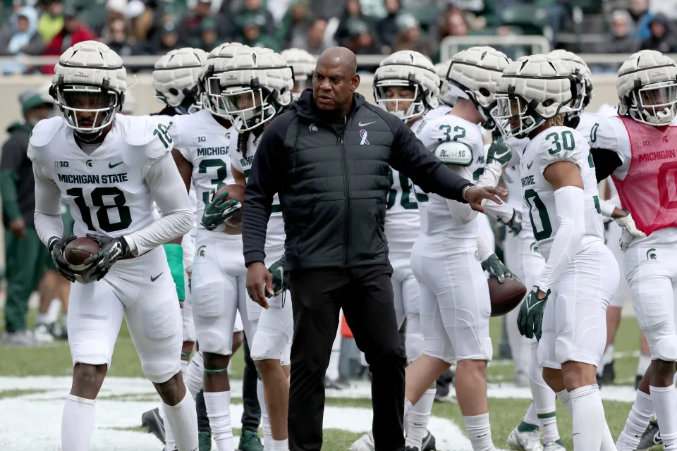

Mel Tucker is in a strange position. Or so he sounds. One minute, Michigan State football’s fourth-year head coach is talking about competing for championships now. The next, he’s pointing toward program-building. Ultimately, it all goes together. “When you have more competition on your roster,” Tucker said last week in Indianapolis at Big Ten media days, “then practices are more competitive. You just get better a lot faster.”
